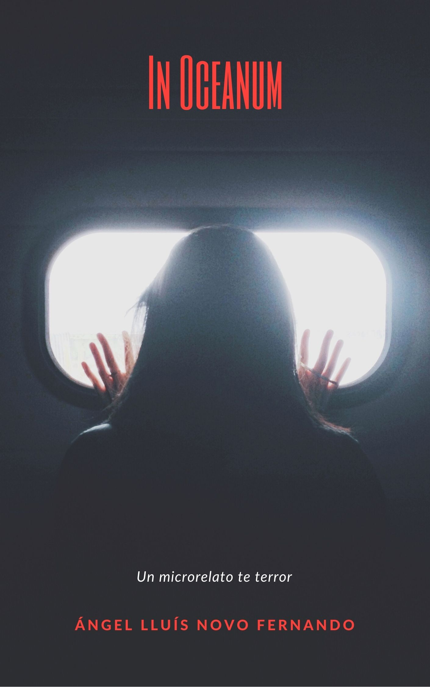
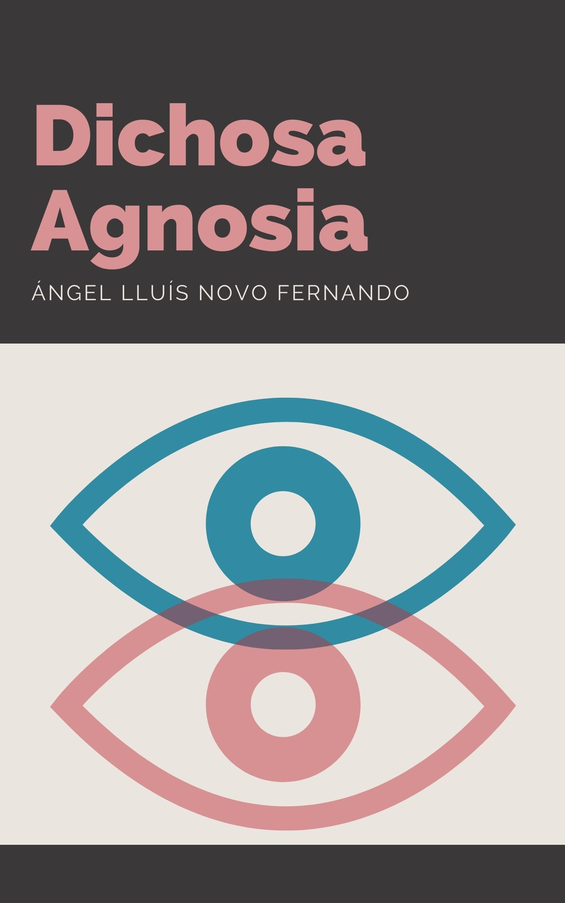
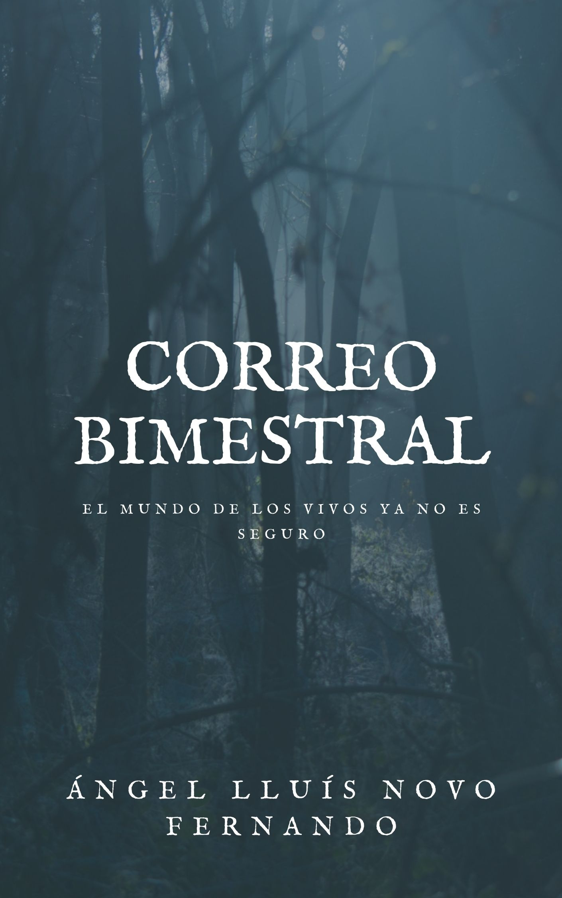
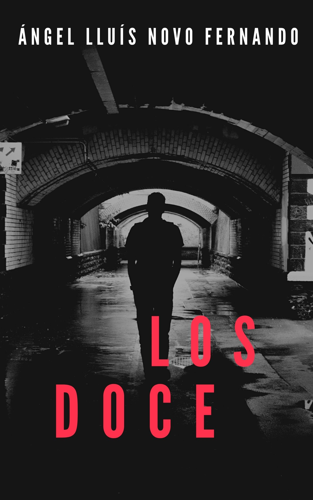
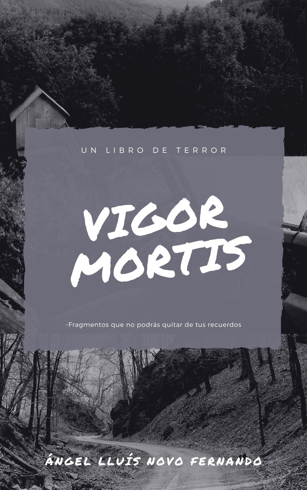
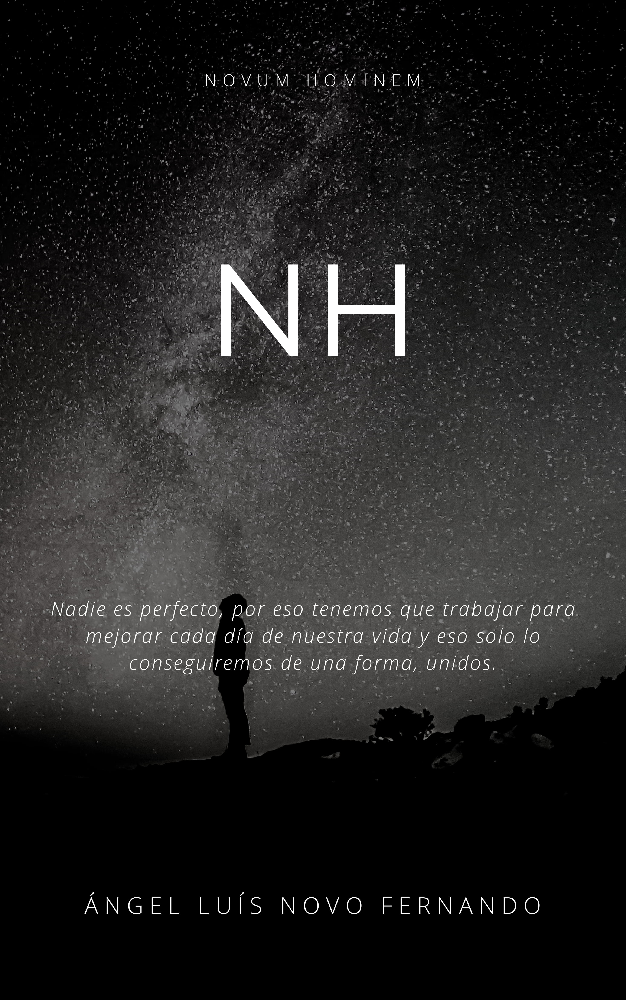
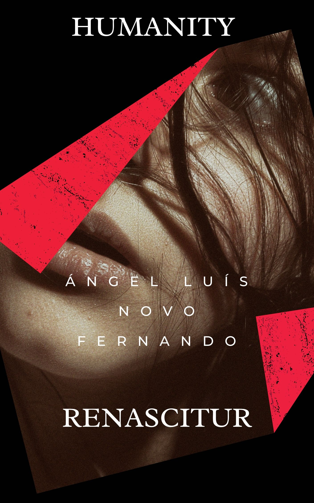
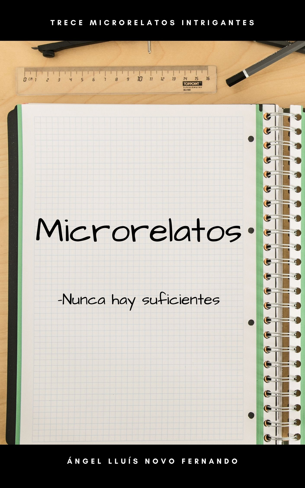

Añadidos recientemente

In Ocean
Un futuro distópico en el que hemos tenido que adaptarnos a los tiempos, la superficie ya no es habitable y hemos tenido que hacer colonias en el fondo del mar. Leeme
Un futuro distópico en el que hemos tenido que adaptarnos a los tiempos, la superficie ya no es habitable y hemos tenido que hacer colonias en el fondo del mar. Leeme

Dichosa Agnosia
Un chico dice oir cosas, pero una realidad mas oscura se esconde tras sus palabras. Leeme
Un chico dice oir cosas, pero una realidad mas oscura se esconde tras sus palabras. Leeme

Correo Bimestral
Un adolescente recibe una carta cada dos meses de una persona anónima, pero ya es hora de conocer a esa persona. Leeme
Un adolescente recibe una carta cada dos meses de una persona anónima, pero ya es hora de conocer a esa persona. Leeme
Londres no está preparado para descubrir a un famoso asesino sanguinario, y está aun menos preparado para saber que el detective tendrá que trabajar con un ser inmortal para pararle los pies. No disponible

Los doce
El mundo no es lo que parece, no es mas que el fruto de otro planeta habitado por entidades superiores, que al aburrirse, deciden crear doce entidades inmortales y abandonarlas a su suerte por el frío universo. No disponible
El mundo no es lo que parece, no es mas que el fruto de otro planeta habitado por entidades superiores, que al aburrirse, deciden crear doce entidades inmortales y abandonarlas a su suerte por el frío universo. No disponible

Vigor Mortis
Un chico pierde a su padre en un accidente de coche, pero este descubre que su padre no era quien decia ser, sinó un billonario con varias propiedades. El chico decide ir a vivir a uno de sus bosques con su pareja, en el que hay una cabaña, lo que no saben esque por ahí tambien vive un asesino desconocido. No disponible
Un chico pierde a su padre en un accidente de coche, pero este descubre que su padre no era quien decia ser, sinó un billonario con varias propiedades. El chico decide ir a vivir a uno de sus bosques con su pareja, en el que hay una cabaña, lo que no saben esque por ahí tambien vive un asesino desconocido. No disponible
Más visitados

Novum Hominem
Un mundo post apocalíptico en el que una pareja tendrá que liderar un refugio hacia la supervivencia Leeme
Un mundo post apocalíptico en el que una pareja tendrá que liderar un refugio hacia la supervivencia Leeme

Humanity Renascitur
Un mundo post apocalíptico, una joven se encuentra sola, desorientada y sin memória, y tendráa que hacer amigos si quiere sobrevivir Leeme
Un mundo post apocalíptico, una joven se encuentra sola, desorientada y sin memória, y tendráa que hacer amigos si quiere sobrevivir Leeme
 (1).jpg "Al hacer click se desplegará la sinopsis")
Alida tendrá que confiar en los que tiene a su lado para derrotar la amenaza que le aguarda. Leeme

Trece microrelatos
Un conjunto de trece microrelatos totalmente distintos, diferentes géneros y detalles que te harán leerlos mas de una vez. No disponible
Un conjunto de trece microrelatos totalmente distintos, diferentes géneros y detalles que te harán leerlos mas de una vez. No disponible